EdgeMM：面向边缘多模态大模型的异构 AI 扩展多核 CPU 与激活感知权重剪枝
边缘部署多模态大模型（MLLM）面临模态编码器/LLM-prefill 计算密集与 LLM-decoding 访存受限的双重瓶颈。论文提出 EdgeMM：基于开源 Snitch cluster 的多核 CPU，通过 RISC-V ISA 扩展以直连接口挂载两类数据流异构的协处理器——面向 GEMM 的 systolic array（CC-core）与面向 GEMV 的数字 CIM 宏（MC-core），并在 MC-core 内置硬件 Top-k 剪枝器，实现逐层动态激活感知权重剪枝以削减 DRAM 访存量。系统层还基于 DMA 中的性能监控计数器（PMC），按输出 token 长度动态重分配各簇 DRAM 带宽预算，维持异构核流水线均衡。设计采用 TSMC 22nm 经 Cadence Genus/Innovus 完成 1GHz 实现，post-P&R 功耗 112mW；对 SPHINX-Tiny 等代表性 MLLM，相比 RTX 3060 笔记本 GPU 取得最高 2.84× 加速、138 tokens/s 吞吐与 0.28 token/J 能效。
边缘设备上实现 MLLM 低时延推理困难：硬件资源受限，且 MLLM 各阶段瓶颈相反——视觉编码器与 LLM-prefill 是计算密集的 GEMM，LLM-decoding 是访存受限的 GEMV；GPU 方案受成本与数据搬运限制，总线挂接 ASIC 加速器需要额外编译器开发并引入控制时延与总线争用；面向长上下文 LLM 的 KV cache 优化也不适用于短 token 序列、流式输入的边缘 MLLM 场景。
基于开源 Snitch cluster 构建层次化多核 CPU（4 组，每组 2 个 CC-cluster 与 2 个 MC-cluster，经层次化 AXI crossbar 互连，DMA 连接 DRAM 控制器）。CC-core 集成 systolic array 协处理器执行 GEMM，MC-core 集成把计算单元嵌入 SRAM bank 的数字 CIM 宏执行 GEMV；扩展 RISC-V 矩阵/矩阵向量指令，由 host core 译码后经直连接口派发，复用 RISC-V 工具链而无需修改编译器。算法与硬件协同：提出逐层动态 Top-k 激活感知权重剪枝（阈值 t=16，k 随层深递减，硬件 pruner 完成 Top-k 选择、索引标记与非剪枝权重行地址生成）；并提出 token 长度驱动的带宽管理——以 DMA 内 PMC 统计各簇访存用量，按预算 B 动态阻塞/重分配簇间带宽，超出范围时引入流式批解码平衡流水线。
相比笔记本 RTX 3060 GPU，EdgeMM 取得 2.84× 性能加速（含激活感知剪枝），达到 138 tokens/s 吞吐与 0.28 token/J 能效；不含剪枝时为 2.15×
异构 EdgeMM 相比同构 homo-CC 与 homo-MC 设计分别提升 1.79× 与 2.65×；CC-cluster 的 GEMM 性能为 MC-cluster 的 4.3×，MC-cluster 的 GEMV 因访存更高效而快 2.42×
激活感知动态 Top-k 剪枝使 SPHINX-Tiny 的 LLM-decoding 时延平均降低 42%，VQA 分数损失极小；固定剪枝比 0.7 在浅层造成不可逆精度损失
带宽动态分配在 l=128 时降低时延 40.3%、吞吐提升 2.14×（Bc:Bm 可达 1:3 甚至 1:7）；l=1024 时引入批解码，时延增加 42% 但吞吐提升 13.98×
TSMC 22nm 实现，1GHz，post-P&R 功耗 112mW；SA 协处理器占 CC-core 面积 62%，CIM 宏占 MC-core 面积 81%
区别于总线挂接式 ASIC 加速器，论文将异构协处理器（systolic array 与 digital CIM）以 ISA 扩展+直连接口方式并入 CPU，继承 RISC-V 编译器栈并避免总线争用；针对 GEMM/GEMV 瓶颈相反的问题采用数据流异构的双类核而非单一加速器。剪枝方面，相对将 k 视为固定经验值的已有工作，提出随层深动态更新的 Top-k 方案并给出硬件 pruner 支持；调度方面，提出按输出 token 长度动态重分配簇间 DRAM 带宽预算的机制，这是面向异构核流水线均衡的系统级创新。
相关度级别：medium
命中能力域：2.1 IP 架构与微架构
理由：论文主体是边缘 AI 处理器架构而非内存/互连 IP 本身，因此不评为 high；但其方法论与团队 2.1 域直接相通：论文通过 profiling MLLM 各阶段的 GEMM/GEMV 特性、激活稀疏性与访存分布（FFN 权重主导 DRAM 访问、KV cache 占比小）推导架构决策，正是 2.1 中 workload-driven 性能建模与面向 PPA 架构权衡的典型实践。此外，其 DMA 内 PMC 统计、按预算的簇间 DRAM 带宽动态分配、层次化 AXI crossbar 与小矩阵传输有效带宽评估，对团队内存控制器/互连 IP 的 QoS 与带宽调度特性设计有直接借鉴价值；数字 CIM 宏（SRAM 内嵌计算）也可作为存储 IP 演进方向的技术输入。但论文不涉及 LPDDR/HBM/UCIe 等协议、PHY 或验证方法学，与 2.2~2.7 无实质关联。
建议动作：作为方法参考存档
arXiv:2505.10782v1 [cs.AR] 2025年5月16日
Kangbo Bai
北京大学集成电路学院
中国北京 baikangbo@pku.edu.cn Le Ye 北京大学集成电路学院 中国北京 yele@pku.edu.cn
摘要—新兴的多模态大语言模型（MLLMs）展现出强大的跨模态感知与推理能力，在边缘侧的各类应用中具有巨大潜力。然而，MLLMs 通常由计算密集型的模态编码器和访存受限的大语言模型（LLM）解码器组成，给硬件设计带来了截然不同的瓶颈。在本工作中，我们提出了一种具有异构 AI 扩展的多核 CPU 解决方案，这些扩展分别基于以计算为中心的脉动阵列或以存储器为中心的数字存内计算（CIM）协处理器。此外，我们还开发了动态激活感知权重剪枝与带宽管理技术，以提升带宽效率和核心利用率，从而改善整体性能。我们采用商用 22nm 工艺实现了该解决方案。针对具有代表性的 MLLMs，我们的评估表明，与笔记本电脑 3060 GPU 相比，EdgeMM 可实现 2.84 倍的性能加速。
索引词—多模态大语言模型、多核 CPU、异构架构、CPU 扩展。
多模态大语言模型（MLLMs）展现出强大的感知、推理与规划能力，在自动驾驶 [1]、具身智能 [2]、移动端 [3] 以及 AR/VR 等领域具有广阔的应用前景。如图 1(a) 所示，MLLM 接收图像、音频和 LiDAR 等多种模态的输入，这些输入经模态编码器处理以生成 token 表示。随后执行 LLM 及后处理，以完成理解、目标分割 [4] 或轨迹规划 [5] 等任务。由于应用对隐私和实时响应的需求，将 MLLM 部署在边缘设备上的需求十分迫切。
在边缘侧实现 MLLM 的低延迟推理极具挑战性。首先，边缘侧的硬件资源相当受限。其次，MLLM 中不同阶段呈现出截然相反的特性与性能瓶颈。例如，编码器网络是计算密集型的，而 LLM 解码阶段则受限于存储器带宽。此类负载特性限制了某些针对特定 Transformer 定制的加速器 [6], [7] 的性能提升。与此同时，先前针对长上下文 LLM 的优化技术并不适用于边缘 MLLM，后者以流式输入处理较短的 token 序列。
Ru Huang
北京大学集成电路学院，中国北京
ruhuang@pku.edu.cn
Tianyu Jia*
北京大学集成电路学院，中国北京
tianyuj@pku.edu.cn
*通讯作者。
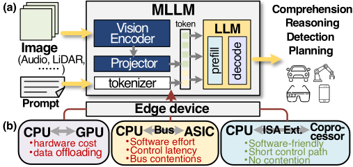
如图 1(b) 所示，边缘设备存在多种硬件架构选择。CPU 仍是边缘设备中最常见的硬件，但其面向 AI 任务的并行能力有限。在边缘设备上使用 GPU 受到成本的严重制约，且从 CPU 向 GPU 的数据卸载可能成为系统瓶颈 [8]。ASIC 加速器也是一种流行的解决方案 [9]，其通过存储器映射接口与主机 CPU 相连。然而，ASIC 加速器需要进行相应的编译器开发，给软件开发者带来巨大的工程投入。它们还引入了总线访问，导致控制延迟增加与总线竞争 [10]。
近年来，在 CPU 内集成协处理器的面向 AI 的指令集架构（ISA）扩展已成为一种颇具前景的 AI 任务解决方案。例如，Intel 在其 Xeon 处理器 [12], [13] 中引入了高级矩阵扩展（AMX）[11]。Arm 在 Armv9-A [14] 中开发了可扩展矩阵扩展（SME）。T-head 提出了开源的 RISC-V 矩阵扩展 [15]。在架构层面，主机 CPU 核心对这些扩展指令进行译码，并通过直连接口将其分派至协处理器执行。与传统的总线挂接式加速器相比，协处理器具有更短的控制路径，并可避免总线竞争。此外，该架构可并入现有的 CPU ISA，并继承其编译器栈 [13]。
在本工作中，我们探索了一种采用异构 AI 扩展的多核 CPU 方案，用于边缘端多模态大语言模型（MLLMs）。对于计算密集型的通用矩阵乘法（GEMM），采用脉动阵列作为协处理器。同时，对于在 LLM 解码阶段占主导地位的访存受限矩阵-向量乘法（GEMV），则采用面积与功耗高效的数字存内计算（CIM）宏。这些协处理器具有不同的数据流和资源分布，并与 RISC-V ISA 及编程模型相耦合，便于部署。此外，我们还开发了动态激活感知权重剪枝及相应的硬件支持，以缓解存储带宽压力。在系统层面，DRAM 带宽可被动态管理，从而针对不同的序列长度充分利用异构核心。
| MLLMs | Visual Encoder | Projector | Language Model |
|---|---|---|---|
| Emu2-Chat [16] | EVA [17] | MLP | LLaMa (33B) |
| LLaVA [18] | CLIP ViT/L-14 [19] (0.3B) | MLP | Vicuna [20] (7B, 13B) |
| MobileVLM [21] | CLIP ViT/L-14 [19] (0.3B) | LDP | MobileLLaMA [21] (2.7B) |
| TinyGPT-V [22] | EVA | Q-former [23] | Phi-2 [24] (2.7B) |
| SPHINX-Tiny [25] | CLIP ViT/L-14 [19], CLIP ConvNeXt [19] + DINOv2(0.4B) [26] | MLP | TinyLlama [27] (1.1B) |
| DeepSeek-VL [28] | SigLIP-L [29] (0.4B) | MLP | DeepSeek-LLM [28] (1.3B) |
| Karmavlm [30] | SigLIP-so [29] (0.4B), CLIP ViT/L-14 [19] (0.3B) | MLP | Qwen1.5 [31] (0.5B) |
| MLLMs | Visual Encoder | Projector | Language Model |
本文的贡献总结如下：
多模态大语言模型（MLLM）在标准大语言模型（LLM）的基础上构建，将多模态数据纳入输入与输出。近两年来，Gemini [32]、GPT-V [33]、LLaVA [18]、InstructBLIP [34] 等领先的 MLLM 相继涌现，对产业界和学术界均产生了影响。它们将 LLM 的推理能力与多模态感知相结合，展现出卓越的性能。
图 1(a) 展示了 MLLM 的典型主干架构，其由模态编码器、投影器和 LLM 组成。以视觉模态为例：特征由基于 Transformer 的视觉编码器（如 CLIP [19]、DINOv2 [26]）从输入图像中提取，随后经多层感知机（MLP）、Q-former [23] 等投影器与语言模型对齐，生成视觉 token。视觉 token 与来自提示词的文本 token 一同送入 LLM。LLM 的推理包含两个阶段，即预填充（prefill）和解码（decoding）。在预填充阶段，在所有 token 之间执行注意力计算，生成首个输出 token 以及键值（KV）缓存。在解码阶段，仅以最后一个 token 作为输入，自回归地生成下一个 token 并更新 KV 缓存。生成的 token 可以转换为语言作为输出，也可以交由自动驾驶（AD）[1] 等下游任务进一步处理。
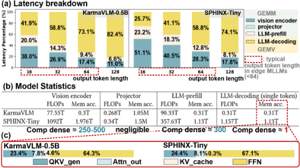
表 I 列出了若干具有代表性的开源 MLLM 及其模型架构。MLLM [16]、[18] 通常采用参数量超过 7B 的 LLM。与此同时，轻量化 MLLM 也成为一种模型发展趋势，以辅助边缘侧的部署。这些边缘 MLLM 采用参数量小于 3B 的压缩 LLM，例如 Phi2-2.7B [24]、TinyLlama-1.1B [27]、Qwen1.5-0.5B [31]。同样值得指出的是，在许多基准测试 [35]-[38] 中，这些边缘 MLLM 也展现出与大规模 MLLM 相当的性能。
为了更好地理解工作负载特性，我们对两个具有代表性的 MLLM 进行了剖析：SPHINX-Tiny [25] 和 Karmavlm [30]。输入 token 长度约为 300，主要由视觉 token 构成。在 Nvidia 3060 GPU 上，不同输出 token 长度下的推理延迟分解如图 2(a) 所示。输出 token 数量的增加会导致更多的 LLM-decoding 迭代，从而扩大该阶段在整体延迟中所占的比例。与此同时，在 token 长度较短的边缘应用中，视觉编码器和 LLM-prefill 对整体延迟也有显著贡献。投影模块（projector）的延迟可以忽略不计。
图 2(b) 还表明，不同阶段的计算与访存特性存在显著差异。在视觉编码器和 LLM-prefill 中，多个 token 嵌入向量共享权重矩阵，形成计算密集型的通用矩阵乘法（GEMM）。与此同时，LLM-decoding 执行的是整个权重矩阵与单个嵌入向量之间的运算，形成计算密度较低的通用矩阵-向量乘法（GEMV）。LLM-decoding 使用与 LLM-prefill 相同的模型参数，但其浮点运算次数（FLOPs）少了两个数量级，暴露出明显的访存受限（memory-bound）瓶颈。如图 2(c) 所示，权重矩阵在访存中占主导地位，其中前馈网络（FFN）消耗的部分最大，这是因为其通道维度通常是模型维度的数倍 [39]。由于边缘 MLLM 的 token 长度较短，KV cache 仅贡献了很小一部分访存量。
由于 DRAM 访存的大部分被 FFN 权重矩阵所占据，我们进一步分析了这部分的特征，例如稀疏性。目前主流的 LLM，例如 Llama 系列 [40]、Mistral [41]、Qwen [31]，均采用门控 MLP（gated-MLP）作为 FFN。图 3(a) 展示了详细过程，其中包含三个 GEMV，计算公式如下：
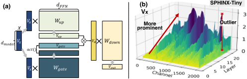
其中，V x 为输入向量，W up 和 W gate 为 d FFN × d model 的权重矩阵。Act () 为激活函数。事实上，GEMV 中的激活向量（V x , V d）在各通道之间表现出显著的稀疏性。图 3(b) 展示了在 SPHINX-Tiny [25] 中一次 token 生成期间剖析得到的 V x 幅值。x、y 和 z 轴分别表示解码器层索引、向量通道和绝对幅值。如图所示，这些激活向量在大多数通道上表现出显著的稀疏性，仅有少数离群通道，且这些离群通道可以很容易地被掩蔽掉。此外，随着层索引的增加，这些离群值变得更加突出。
上述分析引导我们基于以下设计洞察重新思考边缘 MLLM 的最优架构。洞察 1：需要面向 GEMM 和 GEMV 的异构协处理器。计算受限的 GEMM 的性能可通过增加计算资源来提升，而存储器受限的 GEMV 则需要解决带宽问题。洞察 2：激活感知的权重剪枝大有前景。许多先前的工作聚焦于长上下文 KV 缓存优化 [42]。对于短上下文的边缘 MLLM，FFN 的权重矩阵是关键约束，而大多数激活通道中的稀疏性为优化提供了巨大潜力。洞察 3：需要针对输出 token 长度的调度。由于工作负载比例随输出 token 长度而变化，因此也强烈需要动态调度，以保持异构核心工作负载延迟的均衡。
为了适应上述边缘 MLLM 的特性，我们提出了一种具有异构 AI 扩展的多核 CPU 架构，即 EdgeMM，如图 4 所示。EdgeMM 采用基于开源 Snitch cluster [43] 的分层多核架构。其中引入了两种类型的加速器架构，分别作为以计算为中心（CC）核心和以存储器为中心（MC）核心的协处理器。具体而言，CC 核心采用基于计算密集的脉动阵列（SA）的协处理器来执行 GEMM，而 MC 核心则采用存储资源丰富的数字存内计算（CIM）——其将计算单元集成在 SRAM 存储体内部——作为执行 GEMV 的协处理器。
对于 CC 核心，同一集群内的核心共享指令存储器和数据存储器。相比之下，MC 核心中的数据存储器和计算阵列在每个核心内被集成为一个 CIM 宏，并配备一个小型共享缓冲区用于核心间数据传输。每个集群都有一个分布式的直接存储器访问（DMA）模块，所有这些模块均与 DRAM 控制器相连，用于向片上数据存储器传输数据。集群内的核心还共享辅助计算单元（ACU），例如 32 位乘法器和除法器，用于处理不常见的计算。
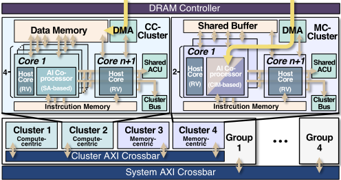
整个芯片包含 4 个组，每组由 2 个 CC 集群和 2 个 MC 集群组成。每个 CC 集群和 MC 集群分别包含 4 个 CC 核心和 2 个 MC 核心。这些核心集成了一个面积高效的 RISC-V 主机核心 [43] 用于控制，以及一个用于 AI 计算的扩展协处理器。每个集群还拥有一个专用的主机核心来控制 DMA 模块。各组与各集群之间通过分层 AXI 交叉开关互连。该硬件架构还可以通过改变架构参数进行扩展。
图 5 和图 6 展示了 CC 核心与 MC 核心的设计细节。两种核心均由主机核心和协处理器组成。扩展指令由主机核心译码，并通过直连接口分派给协处理器。
计算型核心（Compute-Centric core）：如图 5 所示，计算型通用矩阵乘（GEMM）协处理器的主体是一个脉动阵列（systolic array），其中包含 R × C 个乘累加处理元件（PE）。在 GEMM 运算中，存储在 PE 阵列中的权重保持静止，而输入激活值以脉动方式送入阵列。协处理器配备了四个 R × C 矩阵寄存器用于存储操作数。向量单元用于执行逐元素计算的向量指令。向量指令与矩阵寄存器共享，其元素宽度为 C，使得一条指令即可对矩阵寄存器的一行执行并行操作。该协处理器拥有一个独立的矩阵寄存器加载/存储单元，从而避免了主机核心窄端口造成的数据瓶颈。对于一个 R × C 矩阵与一个 M × R 矩阵之间的乘法，加载与计算所需的周期数为：
脉动数据流使数据仅在相邻 PE 之间传输，从而降低了布线开销。然而，在通用矩阵向量乘（GEMV）中仅有一列激活值（在图 5 中以红色圈出），导致 PE 闲置、效率低下。
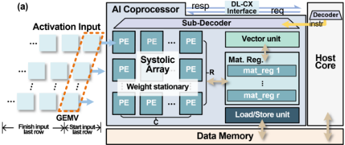
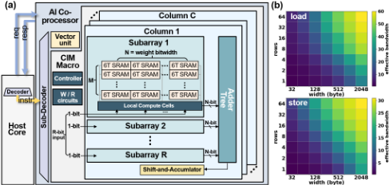
存储型核心（Memory-Centric core）：如图 6 所示，MC 核心的主要特点是在协处理器中采用数字存内计算（digital CIM），将计算单元集成在静态随机存取存储器（SRAM）宏内部，从而避免寄存器到 SRAM 的加载/存储操作。一个 CIM 宏由控制器、字线译码器、读写电路以及 C 个列组成。每列包含 R 个子阵列、一个加法树和一个移位累加器。每个子阵列由 M × N 个 6T SRAM 位单元构成，其中 N 等于一个权重数据的位宽。在 GEMV 过程中，W 位激活数据以位串行方式广播到各列。每个周期从每个子阵列中读出一个权重，并与 1 位激活值相乘。加法树对 R 个乘积求和，并将结果送入移位累加器，在其中对该和进行移位与累加，从而完成整个 W 位乘法。广播数据流使计算单元在 GEMV 中得到充分利用，整个运算在 W+1 个周期内完成。一个 M 行 GEMM 的周期数为：
与脉动阵列（SA）相比，CIM 在 GEMV 上所需的周期数更少，即式 (2)(3) 中 M = 1 的情形。但对于 GEMM，由于位宽因子 W 的影响，CIM 的效率较低。此外，MC 集群的数据存储器明显大于 CC 集群，因而可以一次性传输更大的矩阵块。我们评估了传输不同规模矩阵时的有效带宽（数据量/周期数）。图 6 (b) 显示，小矩阵的有效带宽显著下降，但随着矩阵规模的增大而接近理想带宽。这表明 MC 集群中充裕的片上存储器能够缓解带宽压力，并提升 DMA 与动态随机存取存储器（DRAM）的效率。
我们采用 RISC-V 作为主指令集架构（ISA），并如图 7 所示扩展了用于 AI 加速的指令。第一行展示了 CC-core 所支持的矩阵指令（即用于 GEMM 的 mm mul）。矩阵指令与标量指令的区别在于，其源操作数和目的操作数均采用矩阵寄存器。基于 CIM 的 MC-core 支持矩阵-向量指令，其中 vs1 和 vd 是存储源操作数和目的操作数的向量寄存器，rs1 则存储矩阵操作数的基地址。所有核心中的向量单元支持 RISC-V 向量指令的一个子集，用于实现激活函数和数据精度转换。配置指令可以修改控制与状态寄存器（CSR），以存储诸如向量/矩阵规模等运行时参数。
| M-M | func 31 | uop 25 27 26 | ms2 21 23 | ms1 18 20 | md 15 17 | func3 12 14 | size 9 10 11 | uimm 6 7 | major opcode 0 |
|---|---|---|---|---|---|---|---|---|---|
| 31 | 24 25 2726 | 2019 | 12 1514 | 11 | 6 7 | 0 | |||
| M-V | func | uop | vs1 | rs1 | func3 | vd | major opcode | ||
| V-V | func | uop | vs2 | vs1 | func3 | vd | major opcode | ||
| Config | 31 | 24 25 2726 | rs1 | 19 20 | func3 12 1514 | size 10 11 | 7 9 null | major opcode 0 6 | |
| func | uop | CSR |
| M-M | func 31 | uop 25 27 26 | ms2 21 23 | ms1 18 20 | md 15 17 | func3 12 14 | size 9 10 11 | uimm 6 7 | major opcode 0 |
我们 EdgeMM 的编程模型类似于 snich 集群 [43]。计算任务（例如 GEMM/GEMV）通过张量划分被分配到各个核心上。具体而言，每个核心和集群都包含只读 CSR，用于存储其索引和类型，使核心能够计算地址偏移量以访问所分配的张量分片。此外还支持核心同步功能。在 ISA 扩展方面，扩展指令可由定制的核函数调用，从而无需对编译器内部进行修改即可使用 RISC-V 工具链。
为了有效利用有限的带宽，我们通过激活感知的权重剪枝（activation-aware weight pruning）来优化内存访问削减，并执行由 token 长度驱动的带宽管理。
如第 II-B 节所述，前馈网络（FFN）权重矩阵主导了 DRAM 访问，且激活向量在各通道间表现出显著的稀疏性和离群值。这促使我们执行逐通道的激活感知剪枝。如图 8 所示，可以通过选取 Topk 个离群值，并剪除其余通道及权重矩阵中与之对应的行来执行通用矩阵向量乘法（GEMV）。近期工作 [44]、[45] 采用了类似的概念，但它们都将 k 视为固定的经验输入。事实上，k 可以沿不同的解码器层变化，以实现更好的剪枝。例如，早期的解码器层应保留大部分权重以避免误差累积，而后面的层具有更为显著的离群值，因而可以进行更高效的剪枝。
如算法 1 所示，本文提出了一种逐层的动态 Topk 剪枝方案。k 的更新基于简单而有效的原则：比最大通道小 t 倍的通道可以被认为是可忽略的，其中 t 是一个固定参数，在我们的设计中设置为 16。此外，k 应随层深度逐渐减小。如果保留通道的数量 n 小于 k，则表明当前的 k 过大。因此，将 k 设置为 n。
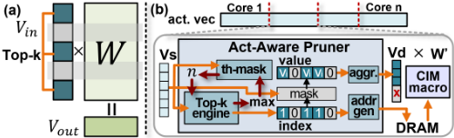
EdgeMM 的异构性使工作负载分配变得复杂。对于多模态大语言模型（MLLM），最优方案是在 CC-cluster 上运行模态编码器与 LLM-prefill，而在 MC-cluster 上运行 LLM-decoding。在自动驾驶（AD）、机器人、增强现实/虚拟现实（AR/VR）等实时应用中，连续的流式输入使流水线化执行成为可能。但 LLM-decoding 的延迟会随输出 token 长度的增加而增大，这可能导致流水线不平衡。
为了在各种 token 长度 l 下保持流水线平衡，本文采用基于限流（throttling）的动态带宽分配。对于默认在各 cluster 之间均分带宽的模型，存在一个期望 token 长度 l_e，可使 CC 与 MC cluster 的延迟达到平衡。如图 9(a) 所示，若 l 超过 l_e，CC-cluster 将进入等待空闲状态。在这种场景下，如图 9(b) 所示，限制 CC-cluster 的带宽并将其重新分配给 MC-cluster，可以加速 LLM-decoding，从而降低整体延迟。为实现带宽分配，每个 cluster 被分配一个内存访问预算 B。在一个时间间隔 T 内，直接内存访问（DMA）中的性能监控计数器（PMC）会累积每个 cluster 的内存访问使用量 d。若 d > B，该 cluster 后续的 DMA 请求将被阻塞，直到 T 结束且 PMC 被复位。我们通过调整 cluster 预算 B_c 和 B_m 来实现动态带宽分配。
| CC-cluster | MC-cluster | (b) | ||
|---|---|---|---|---|
| Cores Array(R,C) OPs/s Data Mem DMA width Crossbar width Area | 4 (16,16) 2T 32kB 512bit 1024bit 0.619mm² | 2 (32,16) 0.25T 128kB 512bit 512bit 0.652mm² | Group 0 3.42mm | Cluster 1 cc-core 0 CC-core 2 CC-core 1 CC-core 2 |
| Clusters in a group | 2 | 2 | Group 2 | Group 3 |
| | CC-cluster | MC-cluster | (b) | |
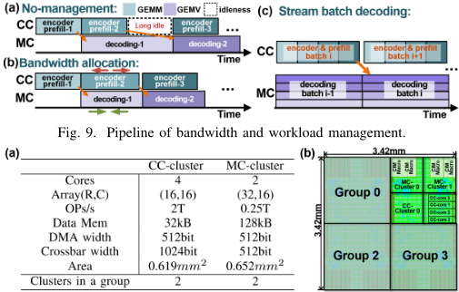
需要注意的是，带宽分配只能在 l 处于一定范围内时实现流水线平衡。对于更大的 l，可以采用基于流的批处理。如图 9(c) 所示，CC-cluster 无需等待 LLM-decoding 即可对一批流式输入进行编码与 prefill，MC-cluster 则对该批次并发执行解码。更大的批次会使 CC-cluster 的延迟成倍增加，而得益于权重复用，MC-cluster 的解码延迟仅略有上升。因此，整体吞吐量可以在极小的延迟损失下得到提升。
我们采用开源的 Snitch cluster [43] 作为 EdgeMM 开发的基础平台。CC-cluster 和 MC-cluster 采用 RTL 流程以及自研的 22nm 数字 CIM 宏单元 IP 实现。我们使用 Cadence Genus 和 Cadence Innovus，基于 TSMC 22nm 工艺在 1GHz 频率下完成综合与物理实现。图 10 展示了 EdgeMM 的版图视图与设计配置。根据 P&R 后报告，芯片功耗为 112mW。基于 SA 的协处理器占 CC-core 面积的 62%，CIM 宏单元占 MC-core 面积的 81%。性能评估通过 RTL 仿真以及配备专用映射探索器的自研模拟器完成。
为了评估异构 AI 扩展带来的收益，我们将异构的 EdgeMM 与同构集群设计进行比较：即分别仅由 CC-cluster 和 MC-cluster 构成的 homo-CC 与 homo-MC。原始的 snitch cluster Layer Index
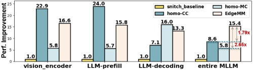
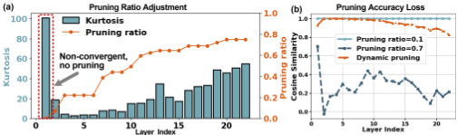
[43]（包含单指令多数据（SIMD）核心）被设为基线。将 SPHINX-Tiny [25] 多模态大语言模型（MLLM）及其内部各阶段（输入与输出 token 长度取平均值）用作工作负载。
如图 11 所示，与基线相比，所有扩展设计均获得了显著的性能提升，这是因为矩阵扩展和协处理器增强了计算能力并减少了冗余的 load/store 操作。homo-CC 和 homo-MC 在各自适配的阶段达到峰值加速比：单个 CC-cluster 的通用矩阵乘（GEMM）性能是单个 MC-cluster 的 4.3 倍，而凭借更高效的内存访问，单个 MC-cluster 在通用矩阵向量乘（GEMV）上的速度则达到 CC-cluster 的 2.42 倍。然而，由于硬件不匹配，homo-CC 和 homo-MC 在非适配阶段遭遇瓶颈。就整个 MLLM 而言，异构 EdgeMM 的性能分别是它们的 1.79 倍和 2.65 倍。
Fig. 12 (a) presents the evaluation results for activationaware dynamic TOPk weight pruning during a token generation, where Kurtosis is a mathematical metric to represent channel-wise data distribution. Higher Kurtosis indicates more distinct outliers, i.e. more channels can be pruned. Results show that with Kurtosis increasing with layer depth, with pruning ratio of a randomly chosen core increases dynamically, proving the activation-awareness of dynamic TOPk mechanism. Note that although the first layer exhibits a high Kurtosis , its data distribution remains unstable. Our experiment reveals that pruning this layer leads to significant accuracy degradation. Thus Alg. 1 skips the first layer.
To validate the accuracy of dynamic TOPk pruning, we assess the cosine similarity between pruned and unpruned output vectors in FFN as depicted in Fig.12 (b). It is observed that dynamic pruning achieves comparable accuracy as a mild fixed pruning ratio of 0.1 while fixing pruning ratio at 0.7 causes irreversible accuracy loss in the shallow layers. Overall, our activation-aware pruning reduces the LLM-decoding latency of SPHINX-Tiny by 42% on average, with minimal score reduction in VQA [35].
Our dynamic bandwidth allocation can harness the heterogeneous cores under varying output token lengths l . As described in Fig. 13, when l < l e = 36 , bandwidth is not the critical bottleneck as the latency of CC-cores is large. As l rises, the extended duration of LLM-decoding slows down the pipeline. Thus the bandwidth budget of CC-cores B c is reduced progressively, reallocating bandwidth to MC-cores. The B c : B m ratio ranges to 1:3 or even 1:7, accelerating MC-cores with tolerable latency increment of CC-cores. This optimization reduces latency by 40.3% and improves throughput 2.14 × at l =128. When l increases to l b = 131 , bandwidth allocation nears its limit, where batch decoding is introduced to balance the pipeline. While batch decoding increases latency by 42% at l = 1024 , it boosts throughput by 13.98 × , compensating for the latency overhead.
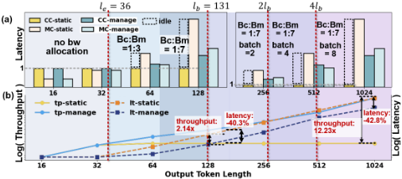
We further compare EdgeMM with existing mobile GPU, as shown in Table II. Although SM cores in GPU provide massive parallelism, they often remain underutilized and not as effective as SA and CIM extensions in EdgeMM. Compared to laptop RTX 3060 GPU, EdgeMM achieves 2.15 × performance for better resource utilization driven by heterogeneity. With our activation-aware weight pruning, the performance gain can be enhanced to 2.84 × , reaching 138 tokens/s throughput. Overall, EdgeMM achieves a 0.28 token/J energy efficiency.
| Compute Power | Bandwidth | MLLM perf. | |
|---|---|---|---|
| RTX 3060 Laptop EdgeMM | 13TFLOP/s (FP32) 18TFLOP/s (BF16) | GDDR6 336GB/s | 1 × 2.15 |
| × | |||
| EdgeMM+Weight pruning | 18TFLOP/s (BF16) | 2.84 × |
| | Compute Power | Bandwidth | MLLM perf. |
我们提出了 EdgeMM，一种面向边缘多模态大语言模型（MLLM）、具有异构 AI 扩展的多核 CPU。为了适配 MLLM 中具有不同属性的各个阶段，针对通用矩阵乘（GEMM）和通用矩阵向量乘（GEMV）集成了基于脉动阵列和数字存内计算（CIM）宏单元的协处理器。为了充分利用有限的带宽，提出了由硬件支持的激活感知动态权重剪枝。采用由 Token 长度驱动的带宽分配来充分利用异构核心。总体而言，与 RTX 3060 GPU 相比，EdgeMM 实现了 2.84× 的性能提升。